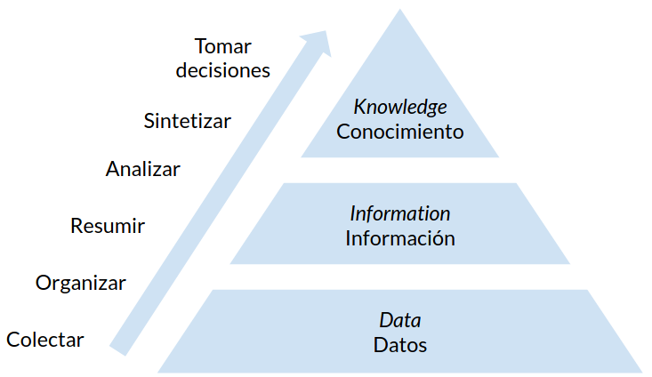

Estadística: Fundamentos
Contenido
11. Estadística: Fundamentos¶
11.1. Mundo de datos¶
Los avances tecnológicos recientes nos permiten medir, almacenar y transmitir datos de toda índole
Datos comerciales y bancarios
Datos de operaciones industriales
Datos públicos y gubernamentales
Datos científicos y médicos
Datos de redes sociales
Datos de dispositivos: Smart-hardware e Internet de las cosas
Pero los datos crudos tienen poco valor, debemos extraer información a partir de los datos si queremos tener el conocimiento para tomar las mejores decisiones
Este proceso se resume conceptualmente en el siguiente diagrama conocido como el modelo Data-Information-Knowledge (DIK)
{kind=link}
11.2. Predicciones y decisiones¶
Nuestros datos son mediciones u observaciones de un sistema o proceso que queremos analizar. En base a nuestros datos podemos proponer y ajustar un modelo para nuestro sistema. Finalmente usamos el modelo para hacer predicciones y tomar decisiones
Este proceso se resume en el siguiente diagrama

Considere el siguiente ejemplo. El censo de Chile busca contar y caracterizar a los habitantes de nuestro pais
El censo son las observaciones de un sistema: La población de Chile
En base a los datos obtenidos a través de múltiples censos podríamos crear un modelo para la evolución de la población en una ciudad o región
Usando el modelo podríamos intentar predecir el crecimiento poblacional en un cierto horizonte de años
Esta predicción puede servir como sustento para desarrollar políticas públicas (tomar decisiones)
11.3. Describiendo sistemas¶
Podemos clasificar los sistemas en base a su comportamiento:
Un sistema determinista está gobernado por reglas que nos permiten calcular exactamente su estado final dado un cierto punto de partida o condición inicial
Un sistema estocástico tiene un componente aleatorio, incluso usando la misma condición inicial el estado final puede ser distinto
En general todos los sistemas complejos del mundo real tienen uno o más componentes aleatorio. Consideremos que
Las condiciones naturales varían constantemente
Los sensores y los equipos de medición están sujetos a ruido
Por ende
Para hacer predicciones en sistemas complejos debemos manejar su incerteza
11.4. Fuentes de incertidumbre¶
La incerteza puede tener distintos orígenes. En este apartado revisamos los tres orígenes más comunes
Incerteza inherente o propia
Se refiere a sistemas que son naturalmente inciertos. Por ejemplo, si estoy analizando sistemas de partículas, estoy sujeto al principio cuántico de incertudimbre
Este tipo de incerteza es en general irreducible
Incerteza debido a un modelo imperfecto
Ciertos supuestos o aproximaciones del modelo pueden introducir incerteza. Por ejemplo un modelo demasiado simple o mal calibrado puede introducir ruido en nuestras predicciones
Podemos disminuir este tipo de incerteza mejorando nuestro modelo
Incerteza debido a observaciones imperfectas
En este caso la incertidumbre puede deberse a que
nuestras observaciones del sistema son incompletas o parciales
nuestros sensores son imperfectos e introducen ruido
En ambos casos lo que observamos no es una representación perfecta del sistema
Podemos disminuir este tipo de incerteza capturando más datos, mejorando la calidad de nuestros sensores y/o haciendo mediciones que sean representativas del sistema completo
11.5. Fundamentos de teoría de probabilidades¶
Las probabilidades son la rama de las matemáticas que estudia los eventos y fenómenos aleatorios. Un evento aleatorio tiene asociado una probabilidad
Una probabilidad es un valor en el rango \([0, 1]\) que indica que tan posible o que tan cierto es que dicho evento ocurra
Variable aleatoria
En probabilidades se llama variable aleatoria (VA) al resultado de un experimento que puede tomar múltiples valores. Llamaremos evento o realización a un resultado en particular de la VA
Usaremos la notación
para referirnos a una realización \(x\) que resulta de observar la VA \(X\). Llamamos dominio \(\mathcal{X}\) al espacio de posibilidades de la VA
Ejemplo: El valor de un dado es una VA con dominio \([1, 2, 3, 4, 5, 6]\). Corresponda a una VA discreta con seis estados posibles
Interpretación (frecuentista) de probabilidad
El significado más común de probabilidad proviene de
observar muchas veces el resultado de una VA y contar las veces que cada uno de los valores se repite
Es decir estimamos la frecuencia de los valores posibles
Ejemplo: Sea una variable aleatoria \(M\) que corresponde al resultado de lanzar una moneda. Lanzamos una moneda \(5\) veces y registramos \([x, x, o, x, o]\). La probabilidad de cada evento corresponde a su frecuencia (número de apariciones) dividido el total, es decir que
La probabilidad de \(x\) es \(3/5\) o que \(P(M=x) = 3/5\)
La probabilidad de \(o\) es \(2/5\) o que \(P(M=o) = 2/5\)
11.6. Estadística¶
La estadística es la disciplina científica dedicada al desarrollo y estudio de métodos para recopilar, analizar y extraer información de los datos. La estadística busca
Describir fenómenos complejos a partir de observaciones parciales
Inferir propiedades de una población o sistema basándonos en una muestra
Usar datos para responder preguntas y tomar decisiones
El trabajo estadístico se puede resumir en el siguiente ciclo

En esta serie de lecciones estudiaremos técnicas de estadística descriptiva e inferencial (pasos 3 y 4 del diagrama) y las aplicaremos usando scipy.stats y numpy.random
Para un tratamiento teórico más profundo recomiendo el siguiente curso online: https://online.stat.psu.edu/stat100/